Radio/Navigation System Schematics
Radio/Navigation System Schematics
Radio and Amplifier Power, Ground, and Communication UQA
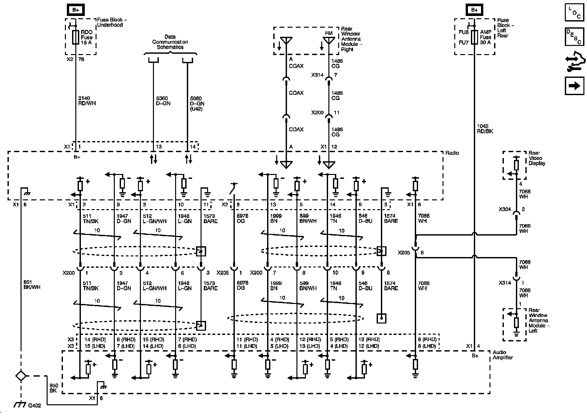
Radio and Amplifier Power, Ground, and Communication UQS -U42
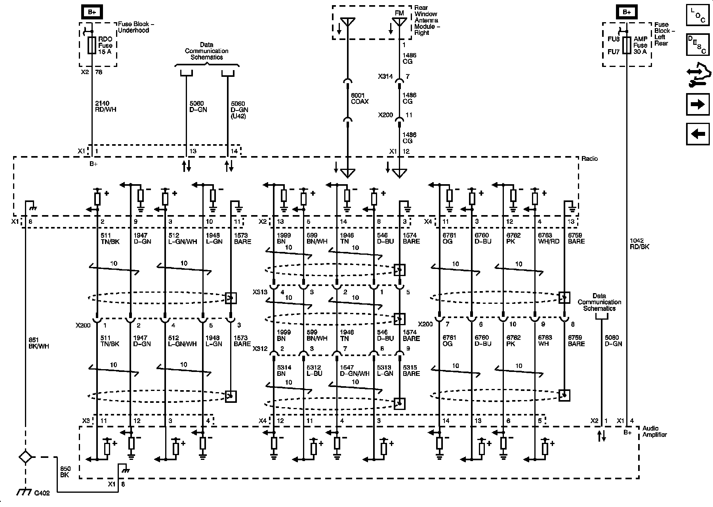
Radio, Amplifier, Power, Ground, and Communication UQS +U42
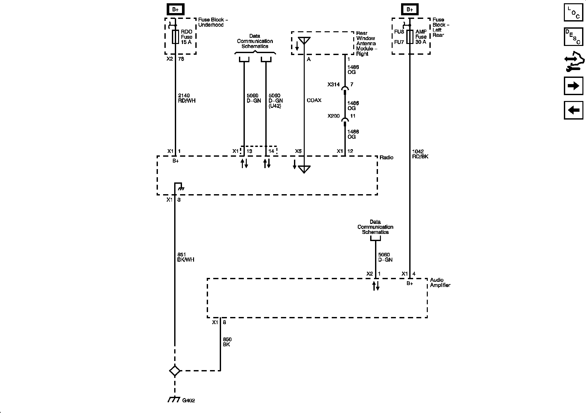
Radio, Amplifier, and Rear Seat Audio Module Signals UQS +U42
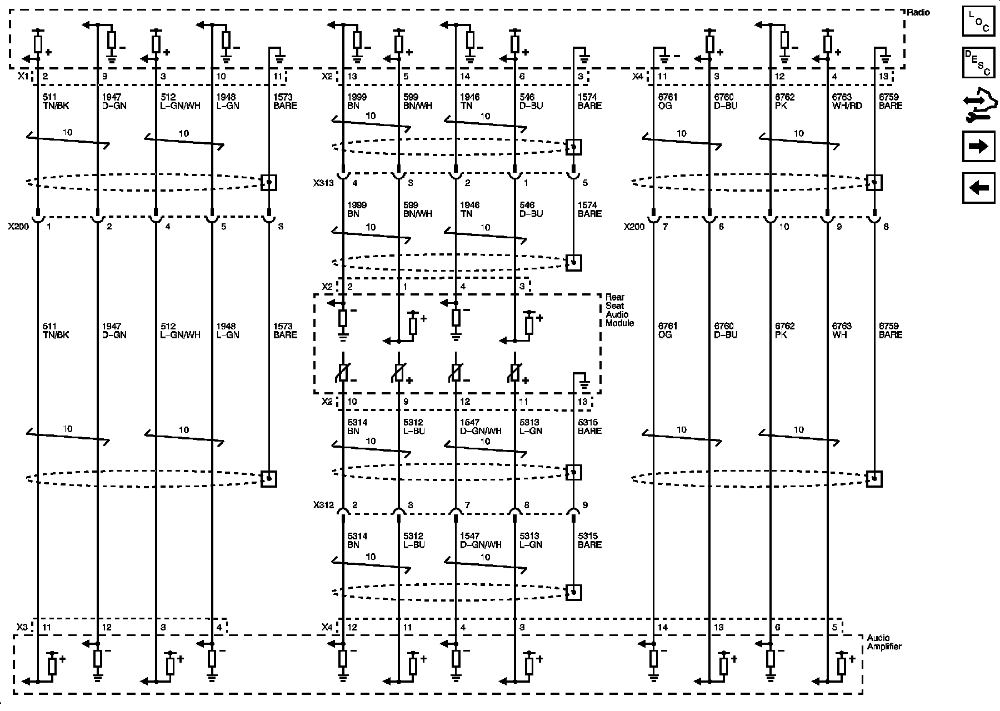
Speakers LHD UQA
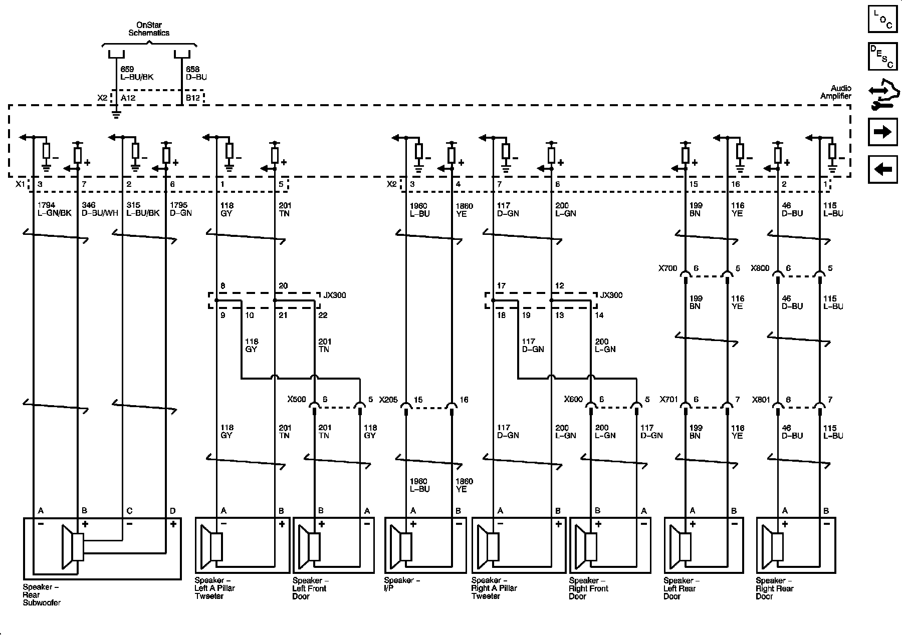
Speakers RHD UQA
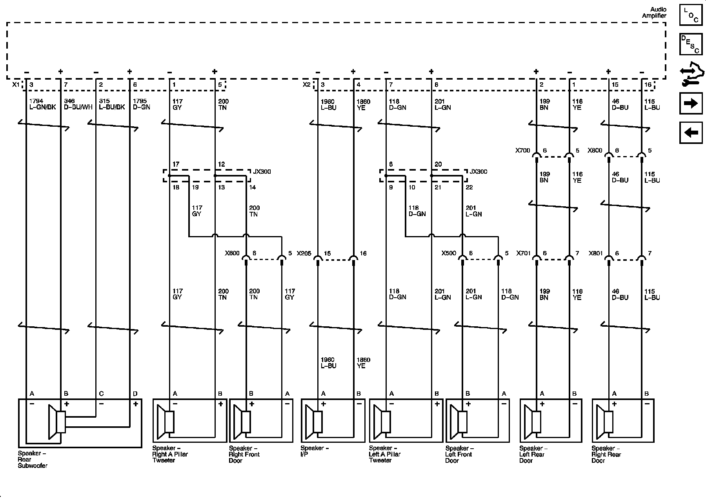
Subwoofer and Rear Speakers UQS
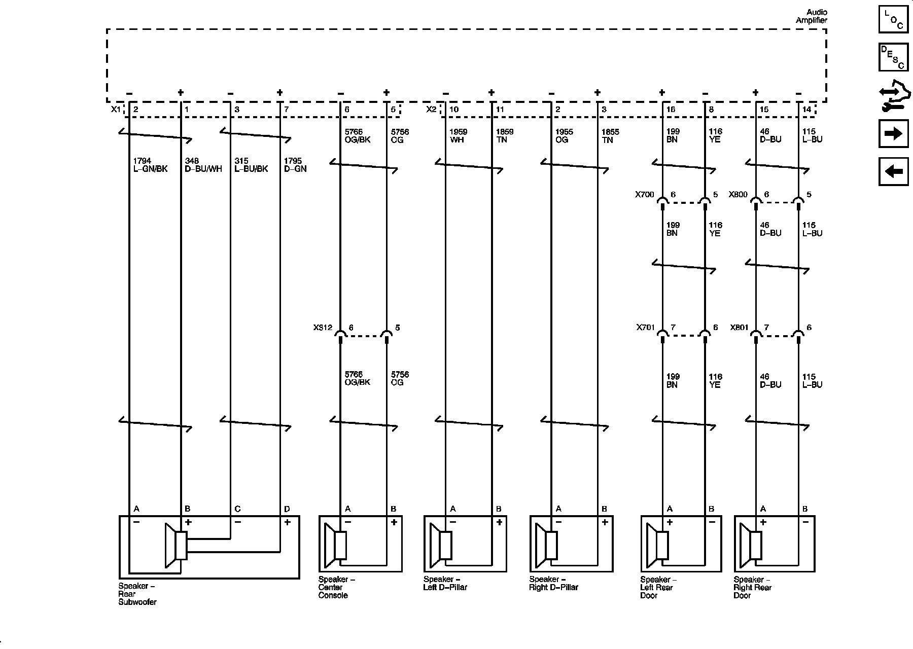
Noise Compensation Microphone and Front Speakers UQS
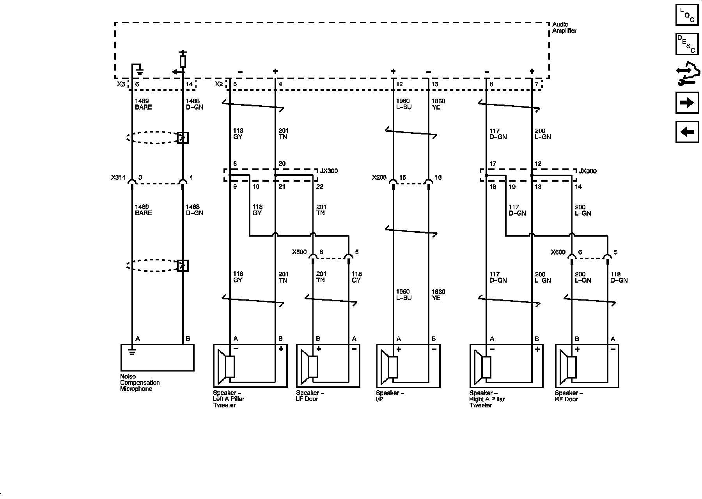
Antenna Signals
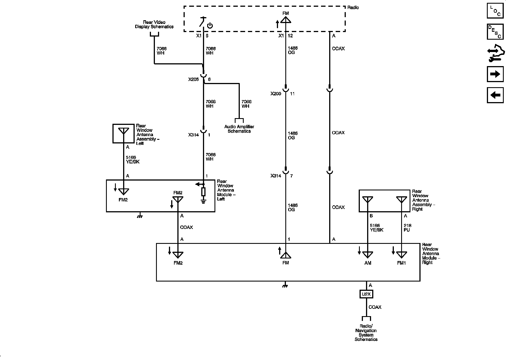
Radio Power, Ground, and Communication UQA
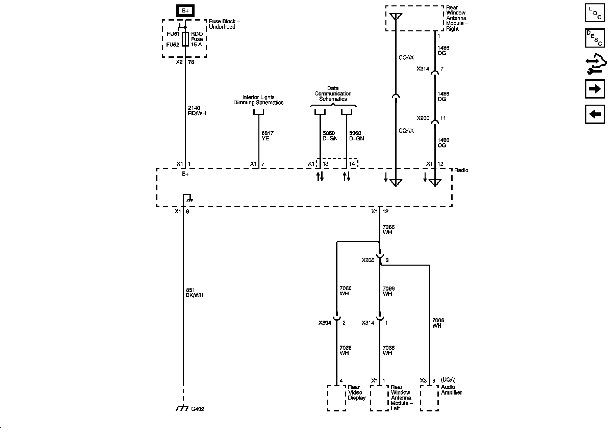
Traffic Information Receiver U2X
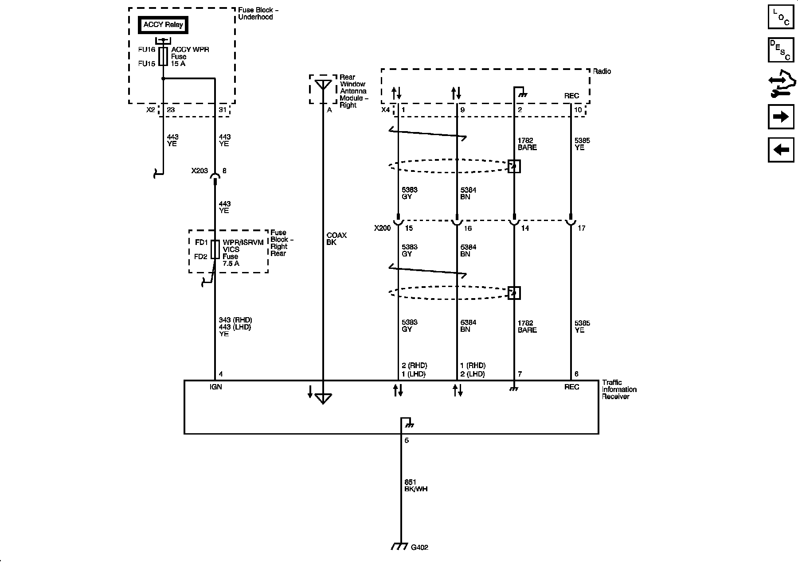
Digital Radio Receiver U2K
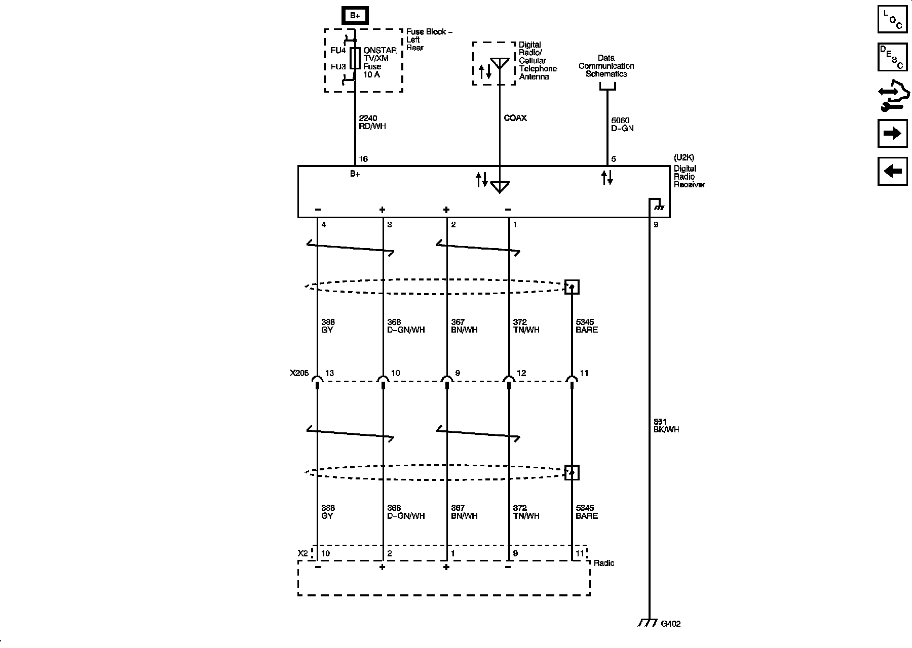
Navigation Controls U2V/U2X/U2Y
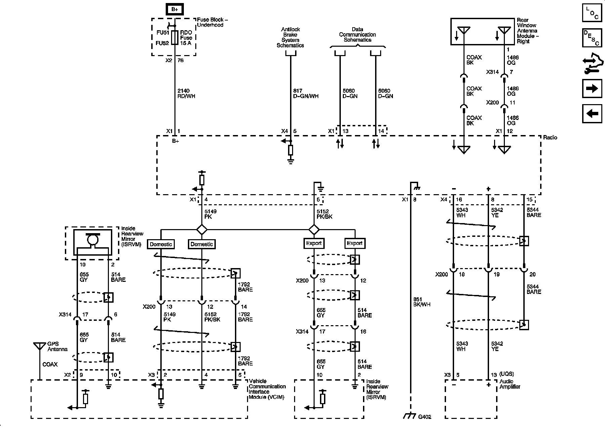
Steering Wheel Controls
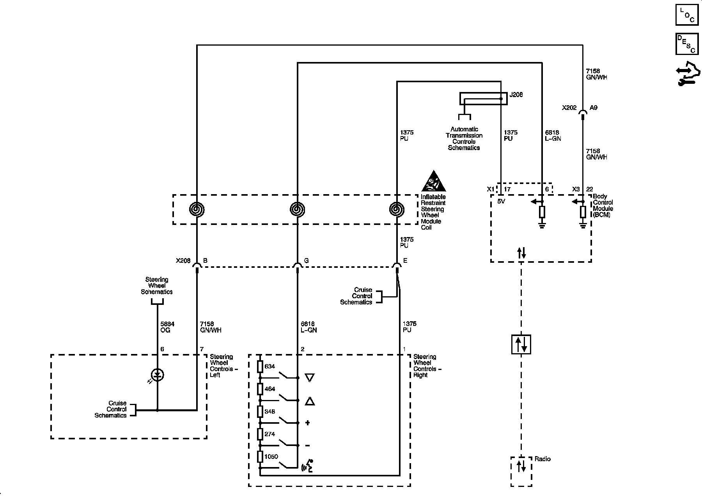